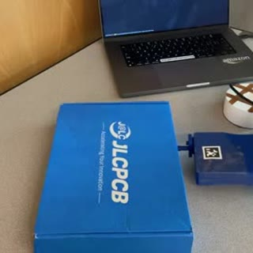
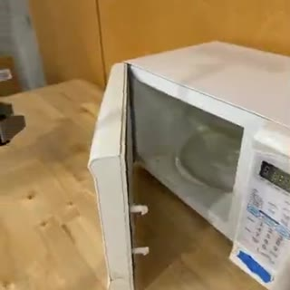
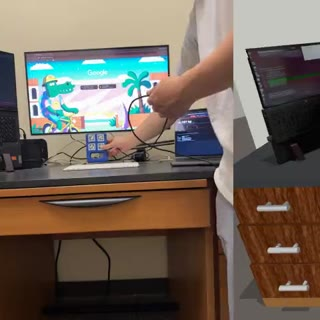
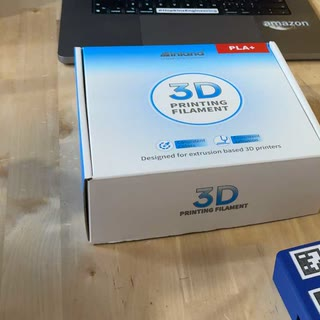

Overview video
Abstract
Visual reconstruction tools for real2sim recover object shapes, but appearance alone does not uniquely determine interaction physics properties like friction or mass distribution. We introduce PokeBot, a cheap and accessible framework which turns human-driven pokes with force reading and single-phone captures into simulator assets rich in interaction physics that are useful for real2sim2real manipulation. PokeBot provides the missing interaction measurements: a person pushing objects with a US$20 force probe and a phone/tablet with LiDAR depth. Our key insight is that foundation vision models can now recover object geometry and motion from a phone's color video and depth, while humans can choose informative pushes from our strong object interaction intuitions. Together, these enable system identification with a single force sensor, without motion capture, multi-axis force/torque sensors or robots. PokeBot scales to complex environments and objects. Paired with recent advances in monocular agentic scene-reconstruction methods, PokeBot identifies and produces entire structured scenes with sliding and articulated objects, such as a kitchen counter or an office desk. Across 404 held-out pokes on 35 objects and articulated parts, 21 of them in 3 scanned scenes, the fitted twins cut the unseen interaction motion error by at least 58
Objects
Select an object to see how PokeBot turns it into a simulator-ready asset.
 Mechanical keyboard (wood)
Mechanical keyboard (wood)
 Apple keyboard
Apple keyboard

JLCPCB box PLA box (UR desk)
PLA box (UR desk)
 Kitchen drawer, top left
Kitchen drawer, top left
 Mechanical keyboard
Mechanical keyboard
 Grey shoe
Grey shoe
 Desk drawer, left top
Desk drawer, left top
 Brown shoe
Brown shoe
 Tool case (UR desk)
Tool case (UR desk)
 Hammer (UR desk)
Hammer (UR desk)
 Desk drawer, middle
Desk drawer, middle
 Desk drawer, left middle
Desk drawer, left middle
 Desk drawer, left bottom
Desk drawer, left bottom
 Desk drawer, right top
Desk drawer, right top
 Desk drawer, right middle
Desk drawer, right middle
 Desk drawer, right bottom
Desk drawer, right bottom
 Kitchen drawer, left bottom
Kitchen drawer, left bottom
 Cabinet door
Cabinet door
 Microwave door
Microwave door

Microwave door, free swing MacBook lid
MacBook lid

Desk monitor
Filament box Stack of books
Stack of books
 Barbecue bottle
Barbecue bottle
 Charging deck
Charging deck
 Headphone case
Headphone case
 Laptop on stands
Laptop on stands
 MacBook (wood)
MacBook base
MacBook (wood)
MacBook base
 Scissors
Scissors
 3M tape
3M tape
 Toolbox
Toolbox
 Heavy box
Heavy box
Method
Seven steps lead from a few pokes to a simulation scene.
1Probe
A handheld probe reads force with a load cell at 320 Hz.
2Capture
A phone records RGB video and LiDAR depth while a person pokes the object.
3Reconstruct
SAM 3D turns one photo and the LiDAR point map into an object mesh.
4Replay
The simulator replays the measured force at the tracked contact point on the mesh.
5Search
We search mass, friction and drag until the simulated motion matches the tracked motion.
6Joints
Drawers and doors follow the same equation, with a slide or hinge joint.
7Scene
The fitted objects are placed together in one simulation scene.
Full walkthrough
Robot trials
Two real-robot poke2sim2poke tasks use PokeBot assets, with YAM arms limited to pokes planned in MuJoCo.
Laptop retargeting
Two YAM arms move a laptop through the poses of a human demonstration, limited to pokes. The planner uses PokeBot-identified physics.
Microwave door closing
A YAM arm plans one poke that closes a microwave door at the demonstrated speed. With PokeBot-identified physics the door closes, and with VLM-inferred physics it rebounds to 31 degrees open.